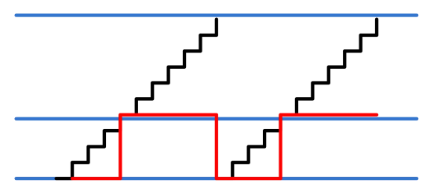

《第十章》PWM 呼吸灯实验¶
实验Vivado工程为“pwm_led”。
本文主要讲解使用PWM控制LED,实现呼吸灯的效果。
10.1实验原理¶
如下图所示,用一个N比特的计数器,最大值可以表示为2的N次方,最小值0,计数器以“period”为步进值累加,加到最大值后会溢出,进入下一个累加周期。当计数器值大于“duty”时,脉冲输出高,否则输出低,这样就可以完成图中红色线所示的脉冲占空比可调的脉冲输出,同时“period”可以调节脉冲频率,可以理解为计数器的步进值。
PWM脉宽调制示意图 不同的脉冲占空比的方波输出后加在LED上,LED灯就会显示不同的亮度,通过不断地调节方波的占空比,从而实现LED灯亮度的调节。
10.2实验设计¶
PWM模块设计非常简单,在上面的原理中已经讲到,这里不再说原理。
信号名称 |
方向 |
说明 |
|---|---|---|
clk |
in |
时钟输入 |
rst |
in |
异步复位输入,高复位 |
period |
in |
PWM脉宽周期(频率)控制。period = PWM输出频率 * (2 的N次方) / 系统时钟频率。显然N越大,频率精度越高。 |
duty |
in |
占空比控制,占空比 = duty / (2的N次方)* 100% |
PWM模块(ax_pwm)端口
`timescale 1ns / 1ps
module ax_pwm
#(
parameter N = 16 //pwm bit width
)
(
input clk,
input rst,
input[N - 1:0]period, //pwm step value
input[N - 1:0]duty, //duty value
output pwm_out //pwm output
);
reg[N - 1:0] period_r; //period register
reg[N - 1:0] duty_r; //duty register
reg[N - 1:0] period_cnt; //period counter
reg pwm_r;
assign pwm_out = pwm_r;
always@(posedge clk or posedge rst)
begin
if(rst==1)
begin
period_r <= { N {1'b0} };
duty_r <= { N {1'b0} };
end
else
begin
period_r <= period;
duty_r <= duty;
end
end
//period counter, step is period value
always@(posedge clk or posedge rst)
begin
if(rst==1)
period_cnt <= { N {1'b0} };
else
period_cnt <= period_cnt + period_r;
end
always@(posedge clk or posedge rst)
begin
if(rst==1)
begin
pwm_r <= 1'b0;
end
else
begin
if(period_cnt >= duty_r) //if period counter is bigger or equals to duty value, then set pwm value to high
pwm_r <= 1'b1;
else
pwm_r <= 1'b0;
end
end
那么如何实现呼吸灯的效果呢？我们知道呼吸灯效果是由暗不断的变亮,再由亮不断的变暗的过程,而亮暗效果是由占空比来调节的,因此我们主要来控制占空比,也就是控制duty的值。
在下面的测试代码中,通过设置period的值,设定PWM的频率为200Hz,PWM_PLUS状态即是增加duty值,如果增加到最大值,将pwm_flag置1,并开始将duty值减少,待减少到最小的值,则开始增加duty值,不断循环。其中PWM_GAP状态为调整间隔,时间为100us。
`timescale 1ns / 1ps
module pwm_test(
input sys_clk_p, //system clock 200Mhz postive pin
input sys_clk_n, //system clock 200Mhz negetive pin
input rst_n, //low active
output led //high-on, low-off
);
localparam CLK_FREQ = 200 ; //200MHz
localparam US_COUNT = CLK_FREQ ; //1 us counter
localparam MS_COUNT = CLK_FREQ*1000 ; //1 ms counter
localparam DUTY_STEP = 32'd100000 ; //duty step
localparam DUTY_MIN_VALUE = 32'h6fffffff ; //duty minimum value
localparam DUTY_MAX_VALUE = 32'hffffffff ; //duty maximum value
localparam IDLE = 0; //IDLE state
localparam PWM_PLUS = 1; //PWM duty plus state
localparam PWM_MINUS = 2; //PWM duty minus state
localparam PWM_GAP = 3; //PWM duty adjustment gap
wire pwm_out; //pwm output
reg[31:0] period; //pwm step value
reg[31:0] duty; //duty value
reg pwm_flag ; //duty value plus and minus flag, 0: plus; 1: minus
reg[3:0] state;
reg[31:0] timer; //duty adjustment counter
assign led = pwm_out ; //led high active
wire clk ;
IBUFDS IBUFDS_inst (
.O(clk), // Buffer output
.I(sys_clk_p), // Diff_p buffer input (connect directly to top-level port)
.IB(sys_clk_n) // Diff_n buffer input (connect directly to top-level port)
);
always@(posedge clk or negedge rst_n)
begin
if(rst_n == 1'b0)
begin
period <= 32'd0;
timer <= 32'd0;
duty <= 32'd0;
pwm_flag <= 1'b0 ;
state <= IDLE;
end
else
case(state)
IDLE:
begin
period <= 32'd17179; //The pwm step value, pwm 200Hz(period = 200*2^32/50000000)
state <= PWM_PLUS;
duty <= DUTY_MIN_VALUE;
end
PWM_PLUS :
begin
if (duty > DUTY_MAX_VALUE - DUTY_STEP) //if duty is bigger than DUTY MAX VALUE minus DUTY_STEP , begin to minus duty value
begin
pwm_flag <= 1'b1 ;
duty <= duty - DUTY_STEP ;
end
else
begin
pwm_flag <= 1'b0 ;
duty <= duty + DUTY_STEP ;
end
state <= PWM_GAP ;
end
PWM_MINUS :
begin
if (duty < DUTY_MIN_VALUE + DUTY_STEP) //if duty is little than DUTY MIN VALUE plus duty step, begin to add duty value
begin
pwm_flag <= 1'b0 ;
duty <= duty + DUTY_STEP ;
end
else
begin
pwm_flag <= 1'b1 ;
duty <= duty - DUTY_STEP ;
end
state <= PWM_GAP ;
end
PWM_GAP:
begin
if(timer >= US_COUNT*100) //adjustment gap is 100us
begin
if (pwm_flag)
state <= PWM_MINUS ;
else
state <= PWM_PLUS ;
timer <= 32'd0;
end
else
begin
timer <= timer + 32'd1;
end
end
default:
begin
state <= IDLE;
end
endcase
end
//Instantiate pwm module
ax_pwm
#(
.N(32)
)
ax_pwm_m0(
.clk (clk),
.rst (~rst_n),
.period (period),
.duty (duty),
.pwm_out (pwm_out)
);
endmodule
10.3下载验证¶
生成bitstream,并下载bit文件,可以看到PL LED灯产生呼吸灯效果。PWM是比较常用的模块,比如风扇转速控制,电机转速控制等等。

ZYNQ MPSoC开发平台 FPGA教程 - Alinx官方网站